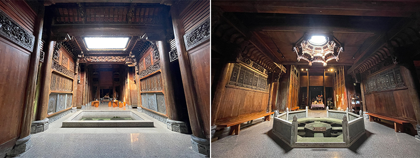

「帶你去一個預想不到的地方！」友人一句話把我帶到了桃園的一家工廠鐵皮屋面前，望著鐵皮屋又看看朋友，心裡滿是問號？？：「大老遠的把我帶來這裡做什麼？前不著村又不著店的，就一間鐵皮屋有什麼特別的嗎？」走近一看，鐵皮屋入口插了一面旗子上面寫著「大夫第」，「該不會是朋友看我最近氣色不佳專程帶我來這裡看中醫吧？！」心裡這樣想著。門口有一位阿伯，朋友熟門熟路的掏了兩百元拿到兩張門票，心裡震驚：「這裡看醫生還要繳入場費！！」朋友淡笑不語往前直行，穿過鐵皮屋印入眼簾的一幢白色外牆的老宅門上掛著「大夫第」的匾額，與鐵皮屋八竿子打不著關係格格不入的矗立在那，朋友這時才說不要小看這房子歐！它可是從大陸飄洋過海來到這裡的！
進去前聽了朋友對它的簡介，「大夫第」是古代中國高級官員修建府邸的一種通稱，此處的「大夫第」原處於大陸安徽，是收藏家從當地一磚一瓦一木運回台灣落腳桃園蘆竹這，再委請安徽當地與桃園的師傅重新依照原宅樣貌搭建起來，進入屋內馬上看到了徽式建築美學，徽式建築著重雕刻，融木雕、石雕、磚雕為一體，充斥整間房子，雕刻內容豐富吉祥圖騰、植物、動物，還有刻有戰爭壯闊的場景與世家學子互相學習切磋的畫面，文武兼具，在在顯得富麗堂皇。
屋內有兩處天井，第一個位於入口處呈長方形造型，天井是房子的眼睛，透過天井可以感受到風影的流動變化，窺見時間的轉移，聽著鳥語輕啼，池水隨著風吹波動帶來的各種情緒，讓人感受到當時的歲月靜好與安適愜意。再往內走去，隨即看到另一處截然不同的八卦造型天井，上為八卦井，下為太極池，是大夫第最有靈氣的地方，從天井射入的光在此匯成日月精華，如遇下雨，雨水滴入池中寓意肥水不落外人田，建築巧思處處可見，值得一看。
|  |
現在蘆竹大夫第由收藏家的兒子經營為一間咖啡廳，進入需一百元門票費，裡面的咖啡不貴，還可以體驗古服（兩小時一百元的收費），大家有興趣可以試試當古人在此悠哉地喝一杯香醇的飲品，也是一種有趣的經驗，離開時再次通過鐵皮屋有種經過任意門的錯覺，短短一分鐘由古代穿越回現代。誰能想到平凡無奇的鐵皮屋中暗藏玄機別有洞天藏著這一棟古宅，就如同很多事不要只單看表面，細細品嘗其中，常常會有令人出乎意料的結果。
蘆竹大夫第
地址：桃園市蘆竹區龍安街二段1632號
營業時間：13:00 – 19:00（周一休）